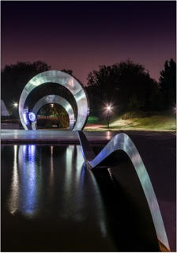
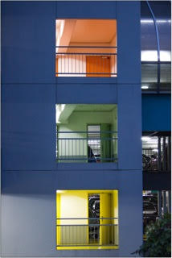
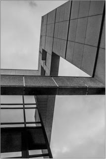
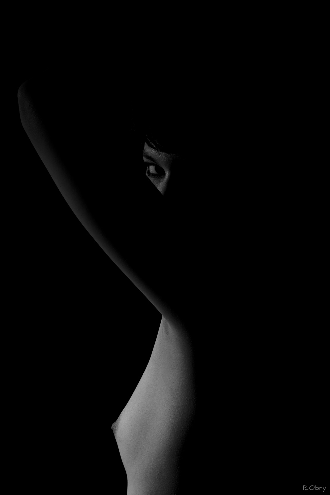
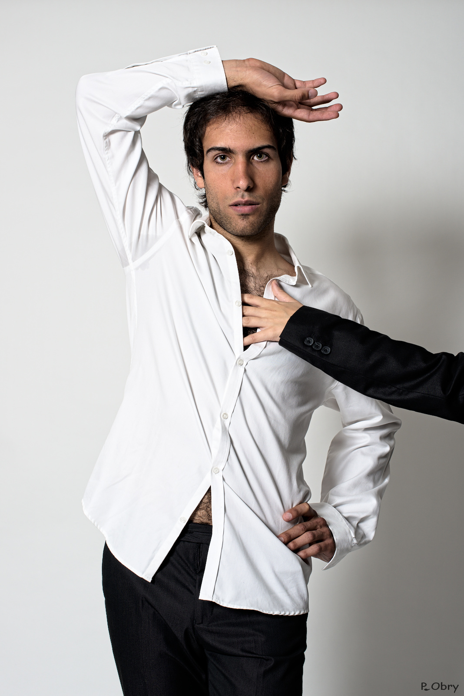
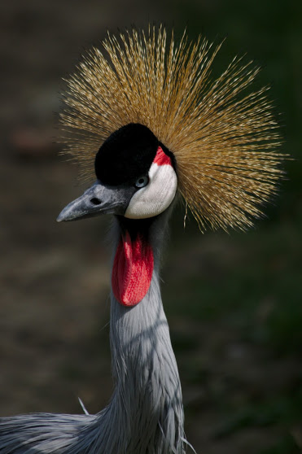
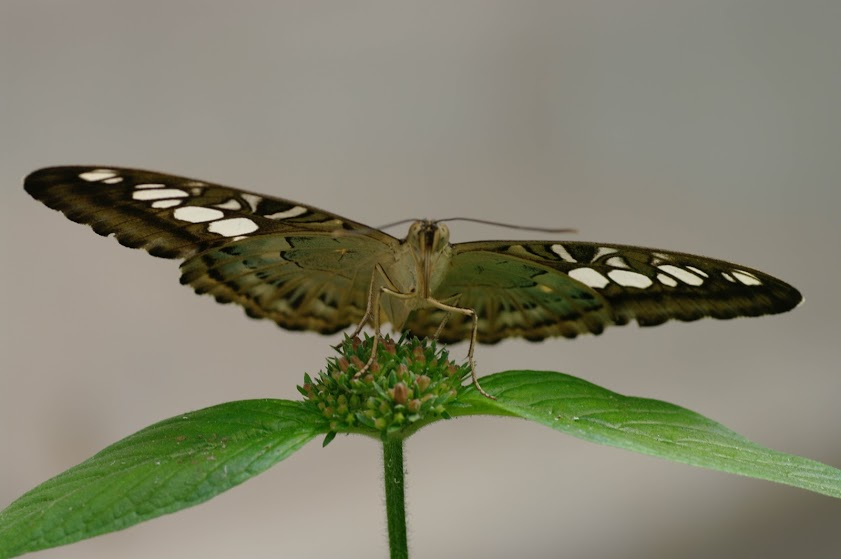

Activités
Les adhérents du photo-club vicinois font des photographies variées. Des sorties sont régulièrement organisées et sont l'occasion pour chaque membre d'exercer son regard photographique.
Architecture
Au cours d'une saison du club, plusieurs sorties pour photographier des éléments d'architecture sont organisées, à La Défense, Versailles ou Saint-Quentin en Yvelines.



Studio
Le PCV dispose également de matériel pour réaliser des photographies en studio. Des séances d'initation sont organisées pour les débutants.


Nature
Des sorties nature sont également organisées au Zoo de Beauval, la ferme aux papillons de la Queue-Lez-Yvelines, le chateau de Sauvage.

